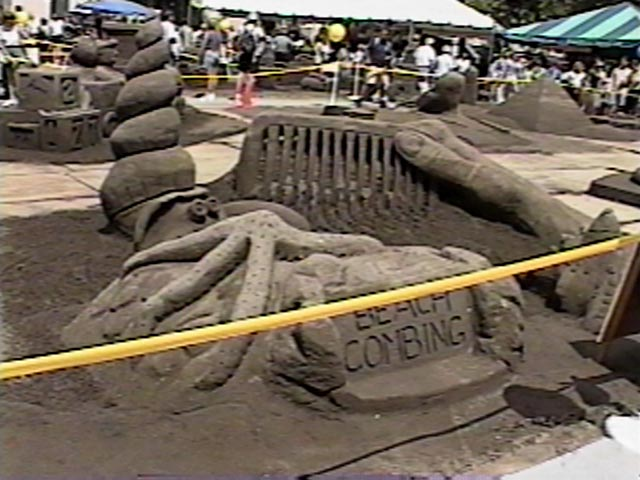
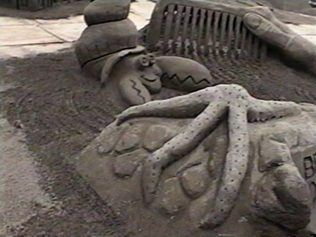

Our Sculpture
This was my first look at the finished sculpture. Check out the veins on the back of the hand. That's all Mike Robinson. Our Master Sculptor said to go for the "cartoon look", but that was not going to satisfy Mr. Robinson. Nice work! Also check out the conch shell. Turned out very nice.
Here's our title for our sculture. Those are some sharp looking beach
rocks. What genius carved those? They look real enough to grow
lichen! (Like I said, you don't like it, write your own ;-)

Note the level of detail. You can see sky though the tines of the comb in the upper left
corner. Nice touch.

The majority of the sand on the base is just roughed out with some comb marks in front of the comb.
The front edge looks like water washing up on the beach.
You get a better sense of the base and water in this shot. You can also get a better look at the
conch shell in the right front corner.
This guys is about six feet tall. Not bad for a bunch of novices!
That's one big claw!
Man, that hand and comb look nice. Check out the lines on the knuckle. The tines on the comb
were carved by one of the architects. One that, according to his colleague, "is really good
at straight lines".

Here's a shot from back a ways. What's that on the sign in front of our sculpture? Let's take
a closer look...
Okay, well that didn't help much, but it's true. We won "Best Rookie Design". Good
job, team. It was a bunch of fun!